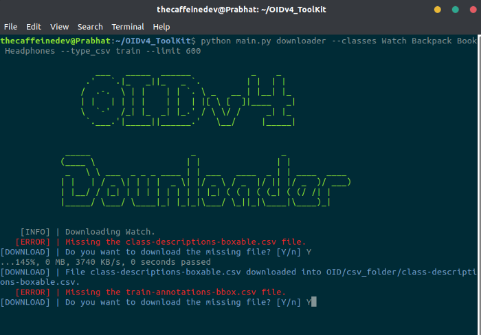
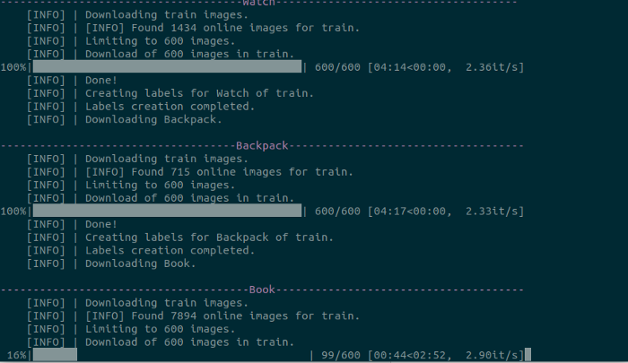
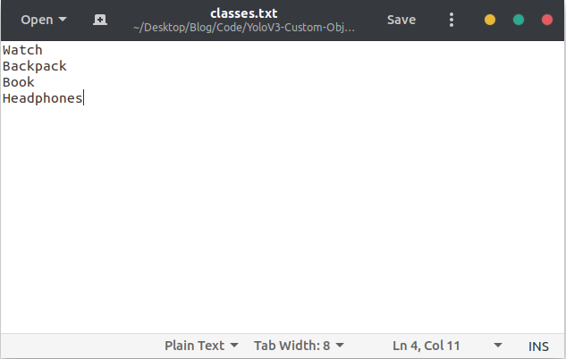
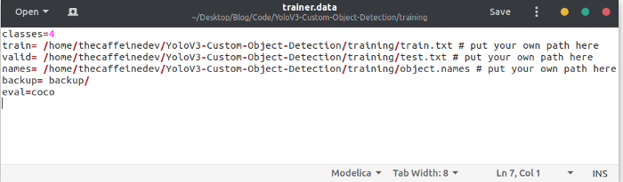
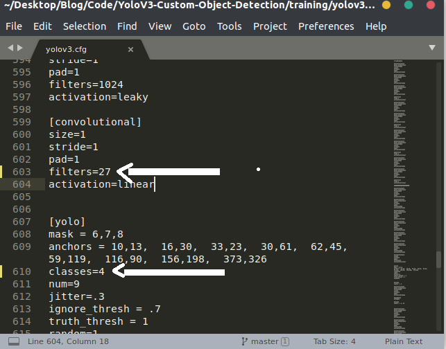
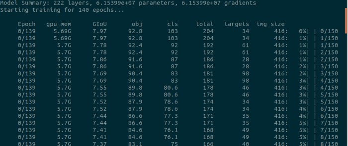
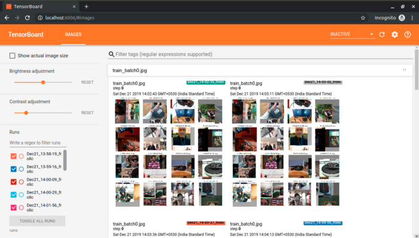
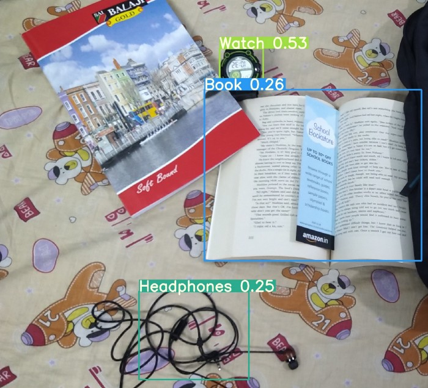
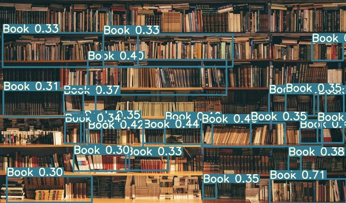

Custom Object Detection With YoloV3
Object Detection is a task in computer vision that focuses on detecting objects in images/videos.
There are various object detection algorithms out there like YOLO (You Only Look Once,) Single Shot Detector (SSD), Faster R-CNN, Histogram of Oriented Gradients (HOG), etc.
Prerequisites
It’s good to have a basic knowledge of deep learning computer vision. And basics of programming.
In this article, we are going to train our own custom yolov3 model for object detection.
The steps needed are:
- Gathering data
- Converting to YoloV3 format
- Setting Training Pipeline
- Training model
- Exporting weights file.
- Testing object detector
Gathering data
We are going to get our data from OpenImagesV5. It was first introduced in 2016, It’s is a collaborative release comprising about nine million images annotated with labels covering thousands of object categories. The new version is an update on 2018’s Open Images V4.
Open Image V5 features newly added annotations on image segmentation masks for 2.8 million objects in 350 categories. Unlike bounding-boxes that only identify the general area in which an object is located, these image segmentation masks trace the outline of the target object, characterizing it’s spatial extent with a higher level of detail.
I am going to choose 4 classes of my choice from OpenImagesV5 that is Backpack, Watch, Book, and Headphones. You can choose as many as you want.
We will have to download those images first. There’s an amazing toolkit from GitHub with a full explanation of how to use it. This toolkit will help us to download the images. The toolkit installation is easy. This guy has written a tutorial to detect custom objects using yolov3 using Keras. You can check it out, he has explained all the steps. In my post, I am going to use PyTorch and will try to simplify things as much as possible.
- Downloading the toolkit
First, open up your terminal and clone the toolkit repository
git clone https://github.com/pythonlessons/OIDv4_ToolKit.git
Then go the folder by
cd OIDv4_ToolKit
Install all the dependencies by
pip3 install -r requirements.txt
- Using toolkit & Downloading the data
First of all how to check if we can download the appropriate image class we need? You need to go to the OIDv5 homepage, click on explore and in a search tab try to find your desired class. In my example, I will search for “Watch”, “Backpack”, “Book”, and “Headphones”. To download all of them you can simply run
python3 main.py downloader --classes Watch Backpack Book Headphones --type_csv train --multiclasses 1 --limit 600
With this command, 600 training images for each class will get downloaded. If you are using for the first time it will ask you to download (train-annotations-bbox or test-annotations-bbox) CSV file. Type Y, while running the command so that it would get downloaded.

You need to wait for some time to finish the download.

This is the folder structure :
main_folder
│ - main.py
│ - oid_to_pascal_voc_xml.py
│ ..
└─── OID
│
└─── csv_folder
│ │
│ └─── class-descriptions-boxable.csv
│ │
│ └─── test-annotations-bbox.csv
│ │
│ └─── train-annotations-bbox.csv
└─── OID
│
└─── Dataset
│
└─── train
│
└─── Watch_Backpack_Book_Headphones
Converting to YoloV3 format
Open oid_to_pascal_voc_xml.py and edit line no. 9 and put
XML_DIR = 'TO_PASCAL_XML'
Now you need to run
python3 oid_to_pascal_voc_xml.py
to generate the object co-ordinates in XML formats. After running this above file, you will get object label files in an XML format in the TO_PASCAL_XML folder.
Again we need to convert it into YoloV3 format.
To train a Yolo model there are requirements how an annotation file should be made:
- One row for one image;
- Row format: image_file_path box1 box2 … boxN;
- Box format: x_min,y_min,x_max,y_max,class_id (no space).
- Here is an example:
- path/to/img1.jpg 50,100,150,200,0 30,50,200,120,3
- path/to/img2.jpg 120,300,250,600,4 …
Now you will have to do some little bit of work with these. Have patience, it’s going to take some manual work now.
I will use the code of Ultralytics to train our YoloV3 model. Make sure to check their repository, it’s great. I have made some changes in the folder structure and all for our own model. Now clone my repository for the next steps.
git clone https://github.com/TheCaffeineDev/YoloV3-Custom-Object-Detection.git
This is the folder structure
main_folder
│ - detect.py
│ - models.py
│ - train.py
│ - test.py
│ - requirements.txt
│ ...
└─── cfg
└─── conversion
│
└─── output
└─── xmls
│ - classes.txt
│ - xmltotxt.py
│ ...
└─── data
└─── training
│ │
│ └─── images
│ └─── labels
│ - object.names
│ - trainer.data
│ - yolov3.cfg
│ - train_test.py
│
└─── utils
└─── weights
Now inside the main folder and run this in your terminal to install all the required dependencies.
pip3 install -r requirements.txt
Then you have to go back to that OIDV4_Toolkit folder OIDv4_ToolKit/OID/Dataset/train/Watch_Backpack_Book_Headphones/ . Here you need to copy all the images into the following folder in our cloned repository /YoloV3-Custom-Object-Detection/training/images And
you need to copy all the XML files which are in the folder to /YoloV3-Custom-Object-Detection/conversion/xmls folder. Don’t get confused about these above steps.
After copying go to the conversion folder. You need to edit the classes.txt file and put your own classes there.
It looks like this:

Now in conversion folder run
# In YoloV3-Custom-Object-Detection/conversion folder
python3 xmltotxt.py -xml xmls -out output
This will generate all the label files in the yolov3 format inside the output folder.
Setting Training Pipeline
Now you have to copy all the .txt files which are in YoloV3-Custom-Object-Detection/conversion/output folder to YoloV3-Custom-Object-Detection/training/labels folder.
Now go to the YoloV3-Custom-Object-Detection/training folder. Now we will edit some files here. Now open that object.names file and edit it out with your own classes. Mine looks like this
Now in
# In YoloV3-Custom-Object-Detection/training folder
python3 train_test.py
This above file will generate train.txt and test.txt. You can open and check the file for more details. Basically we are splitting 70% & 30% for training and testing respectively.
Then open trainer.data . It looks like this. You need to put your no. of classes in the first line, train.txt and test.txt path in 2nd and 3rd line, object.names path in the 4th line.
Mine looks like this

Now you need to edit the .cfg file. By default each YOLO layer has 255 outputs: 85 outputs per anchor [4 box coordinates + 1 object confidence + 80 class confidences], times 3 anchors.
In our case we are using only four classes, then we need to edit the filter. You can reduce filters to filters=[4 + 1 + n] * 3, where n is your class count. This modification should be made to the layer preceding each of the 3 YOLO layers. Also, modify classes=80 to classes=n in each YOLO layer, where n is your class count.
In our case in yolov3.cfg file I changed the batch size & subdivisions which is in line no. 6 and 7. Then line no 610 (classes=4) and 603 (filters=27), then line no. 689 & 696, lastly line no. 776 & 783. If you are using, line no. will be different.

Now we are ready to train our yolov3 model.
Training Model
Below is my desktop specification in which I am going to train my model.
- GPU: NVIDIA GeForce RTX 2080 SUPER (8GB)
- RAM: 16GB DDR4
- OS: Ubuntu 18.04
Now in YoloV3-Custom-Object-Detection folder open terminal and run
# In YoloV3-Custom-Object-Detection do
python3 train.py --epochs 110 --data training/trainer.data --cfg training/yolov3.cfg --batch 16 --accum 1
There are optional arguments are there, you can check-in train.py file.
Also, You can Update hyperparameters also such as LR, LR scheduler, optimizer, augmentation settings, multi_scale settings, etc in train.py for your particular task. I would recommend you start with all-default settings first updating anything.

To run tensorboard while training, open another terminal and run
# In YoloV3-Custom-Object-Detection do
tensorboard --logdir=runs

It took me 2 hours to train four objects with 110 epochs.

If you follow the above steps, you will be able to train your own model properly.
Exporting weights file
After training the model, we can get the weights file in the weights folder. It’s in PyTorch model format. We need to convert it to darknet format to test it out. Let’s convert it first. Open up the terminal and run
# convert cfg/pytorch model to darknet weights
# In YoloV3-Custom-Object-Detection
python3 -c "from models import *; convert('training/yolov3.cfg', 'weights/best.pt')"
You will get this message after conversion.
Success: converted 'weights/yolov3-spp.pt' to 'converted.weights'
Now we will test our object detector. You will have the converted.weights in YoloV3-Custom-Object-Detection folder.
Testing Object Detector
Now to run inference, open up your terminal and run
# In YoloV3-Custom-Object-Detection
python3 detect.py --source 0 --weights converted.weights --cfg training/yolov3.cfg --names training/object.names --img-size 416
Check detect.py for details.
- Image: ` –source file.jpg `
- Video: ` –source file.mp4 `
- Directory: ` –source dir/ `
- Webcam:
--source 0 - RTSP stream:
--source rtsp://192.168.0.1/rtp/470011235daa
Some of the image inferences below you can see:


Due to the GitHub file size limit, I couldn’t upload it to GitHub. If you want to test my weight file, you can get it by
wget https://www.dropbox.com/s/tou8f0xvs8wdt8a/converted.weights
Link to the repository: https://github.com/TheCaffeineDev/YoloV3-Custom-Object-Detection
If you want to label your own custom images you can use LabelImg.The process of training and all is almost the same.
If you have any questions, recommendations or critiques, I can be reached via Twitter or via my mail. Feel free to reach out to me.
Thank You